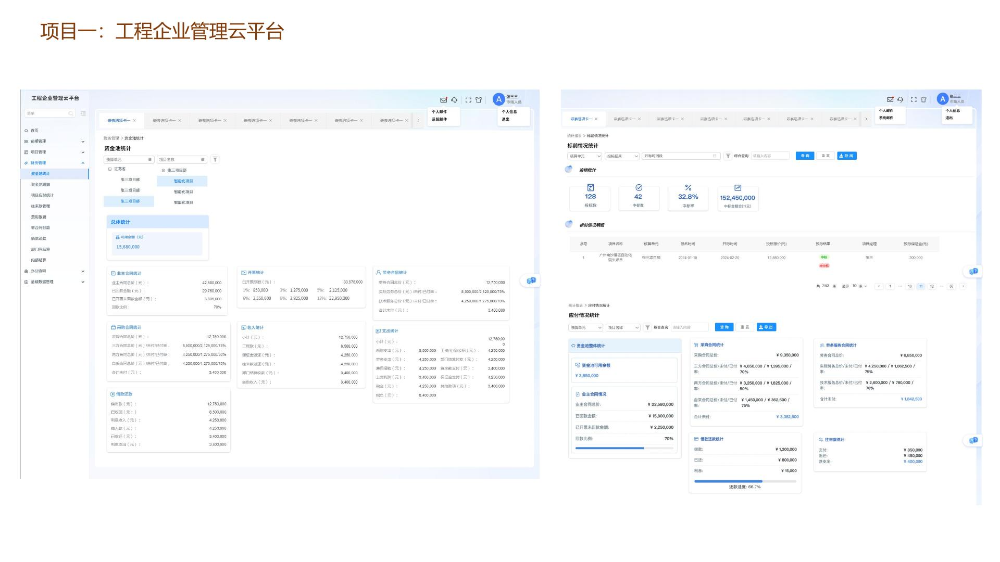
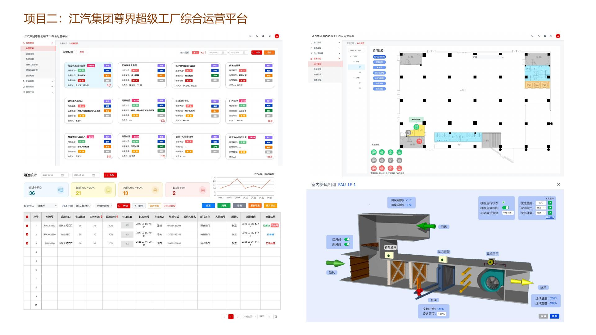
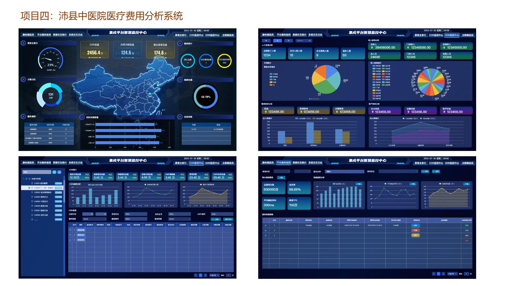
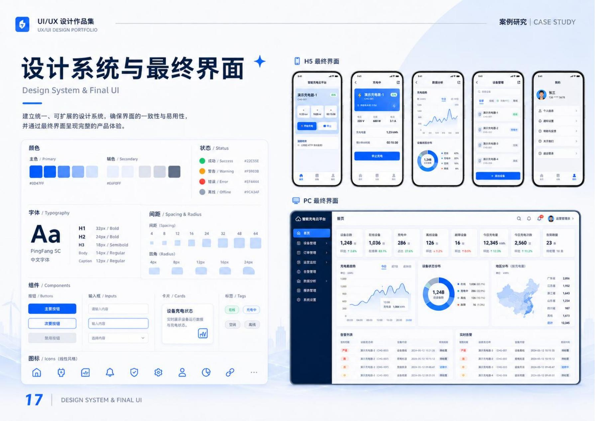

01 / ABOUT
严谨工程逻辑
遇见体验设计。
9年景观设计、工程管理与UI设计复合经验。持一级造价师、二级建造师、中级工程师证书，擅长将工程数据与医疗流程转化为清晰、可靠、兼具美感与实用性的数字产品。
 UI / UX DESIGNER · WU MENG
UI / UX DESIGNER · WU MENG你好，我是
9年景观设计、工程管理与UI设计复合经验。持一级造价师、二级建造师、中级工程师证书，擅长将工程数据与医疗流程转化为清晰、可靠、兼具美感与实用性的数字产品。
UI / UX DESIGNER · WU MENG南京玄策智能科技有限公司
负责B端后台、可视化大屏与医疗HMI，并协助建立多端组件库及设计规范。
江苏天隆建设有限公司
负责项目从投标到交付的全流程管控，并参与品牌视觉设计。
金螳螂园林 / 华设设计集团
参与医院、产业园与滨水空间等大型项目，负责方案至施工图全过程设计。
南京林业大学
形成研究、分析与系统化表达能力。

构建覆盖立项、设计、采购、施工、验收与运维的集成化工程管理平台。

为尊界超级工厂打造涵盖物资、装备与人员的后勤综合管理平台。

面向门诊药房设计无纸化配药与核药系统，支持高强度环境中的快速操作。

帮助医院管理者从全院、科室与异常明细三个层级掌握医疗费用结构。

面向江苏体育休闲用户打造活动、场馆与运动服务的一站式移动平台。

连接充电用户、智能设备与运营人员，覆盖便捷充电与设备运营管理。
期待参与复杂B端、数据可视化、医疗HMI及多端产品体验设计。